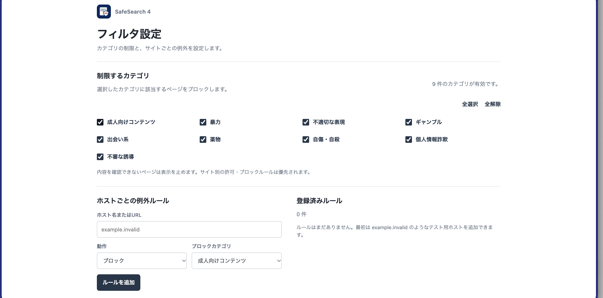

制限するカテゴリ
成人向けコンテンツ、暴力、ギャンブルなど、制限したいカテゴリを設定画面で選びます。設定したカテゴリに該当するページをブロックします。
URLとページのテキストを確認し、設定を適用。
SafeSearch 4 — X-filtering systemは、Microsoft Edge向けのWebフィルタリング拡張機能です。制限するカテゴリとサイトごとの例外を設定し、ページを開くときにURLと読み取れるメインテキストを確認します。
Microsoft Edge版公開中

ブロック時の案内と、カテゴリ・サイト別ルールの設定画面です。画像を選ぶと原寸大で開きます。


URLだけでなく、読み取れるページのテキストも確認します。
サイトごとに登録した許可・ブロックルールと、URLのローカルルールを確認します。
読み取れるメインページのテキストを、拡張機能内のルールで確認します。ページの内容を外部の分類APIへ送信しません。
制限対象になった場合はページをブロックし、対象URL、理由、カテゴリを表示します。
利用するカテゴリを選び、個別のサイトには例外ルールを登録できます。
成人向けコンテンツ、暴力、ギャンブルなど、制限したいカテゴリを設定画面で選びます。設定したカテゴリに該当するページをブロックします。
ホスト名またはURLを指定して、サイトを許可するかブロックするかを設定できます。ブロックする場合はカテゴリも選択できます。サイト別のルールはカテゴリ設定より優先されます。
ページ本文の判定はこの端末内で行われます。外部の分類APIへページ内容を送信しません。
本文判定の対象は、ページから読み取れるメインテキストです。画像・動画・埋め込みフレームの内容は判定しません。ページ構造やアクセス制限などによりテキストを取得できない場合も、本文の判定は行えません。
初期版はローカルルールによる判定です。すべての制限対象ページを検出できるものではありません。詳しいデータ処理はプライバシーポリシーをご確認ください。
Microsoft Edge向けのManifest V3拡張機能です。